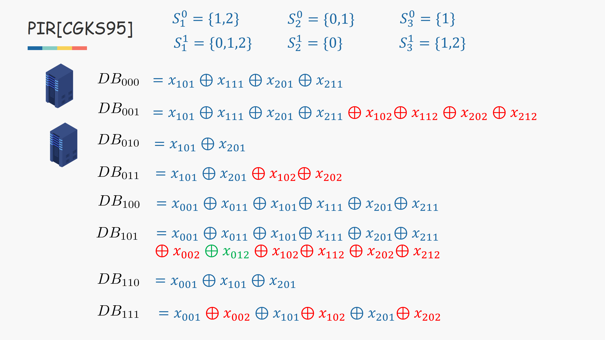

古典多服务器私有信息检索
[CGKS95] :Chor B, Goldreich O, Kushilevitz E, et al. Private information retrieval[C]//Proceedings of IEEE 36th Annual Foundations of Computer Science. IEEE, 1995: 41-50.
私有信息检索
问题描述：
用户想要从服务器中查询某条记录，但它不希望服务器知道它查询的是哪一条
应用场景：
例如常见的网页访问、联系人发现等
古典解决方案
假设：
数据库为n-bit的string
用户想取的记录为第i条
方案：
1.用户通过随机挑选index的子集发给其中一个server
2.发给另一个server异或i后的结果（数据集的异或在图中有定义）
3.每个server拿到一个index集合后，将对应的bit全部取出，并进行异或，得到1-bit
4.将结果发送给用户
5.用户将得到的两个结果进行异或
6.由于两个index集合，相差的只有i，所以index不等于i的bit都会被消去
（multi server条件下假设两个服务器不共谋）
利用更多的server，可以通过将数据库映射到多维，从而达到降低通信量的目的。
下图中包含一个三维的具体例子，如果定义过于难以理解，可以从例子入手。

通过部分服务器返回更多的bits，进一步减少服务器的个数。

这是最近做的一份公用ppt，感觉已经整理了一遍，用的都是我都能看的懂的英文，所以没有再写太多的文字了
安利环节
这次的封面是《机智医生生活》，是最近很久最喜欢的一部剧，极度讨厌医学题材的我，没想到这一部却成了我中最佳，一群志趣相投的朋友在一起做有意义的事情，他们在同一领域却在完全不同方向发光发热，惟愿多年后希望我也能依旧对我所做的事满怀热情，做真正有意义的事，不被年龄焦虑社会压力所裹挟，依旧有所热爱，依旧有朋友在身边。
p.s.：这次在这块内容的学习中，陷入了某一问题的迷茫中（针对了这一方案的安全性分析，有兴趣可以联系我讨论），持续性怀疑人生，忽悠了朋友们来和我讨论，最终终于解决了，突然有一种像剧中一样场景的感觉，希望大家也能在计算机不同方向做一些有意义的事，成为大佬！
最后献上这部剧最喜欢一集的OST:
献上中二台词：”大神也曾是菜鸟！“